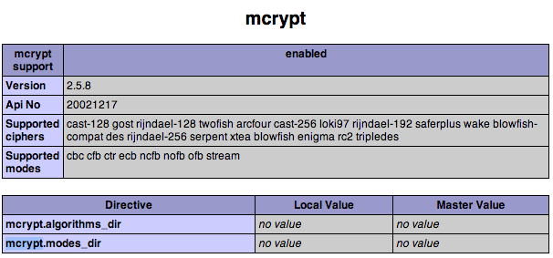

Laravel requires the Mcrypt PHP extension
I am trying to use the migrate function in Laravel 4 on OSX. However, I am
getting the following error:
Laravel requires the Mcrypt PHP extension.
As far as I understand, it's already enabled (see the image below).
What is wrong, and how can I fix it?

Answer
The web enabled extensions and command line enabled extensions can differ. Run
php -m in your terminal and check to see if mcrypt is listed. If it's not
then check where the command line is loading your php.ini file from by
running php --ini from your terminal.
In this php.ini file you can enable the extension.
OSX
I have heard of people on OSX running in to problems due to the terminal pointing to the native PHP shipped with OSX. You should instead update your bash profile to include the actual path to your PHP. Something like this (I don't actually use OSX so this might not be 100%):
export PATH=/usr/local/php5/bin:$PATH
Ubuntu
On earlier versions of Ubuntu (prior to 14.04) when you run sudo apt-get
install php5-mcrypt it doesn't actually install the extension into the mods-
available. You'll need to symlink it.
sudo ln -s /etc/php5/conf.d/mcrypt.ini /etc/php5/mods-available/mcrypt.ini
On all Ubuntu versions you'll need to enable the mod once it's installed. You
can do that with php5enmod.
sudo php5enmod mcrypt sudo service apache2 restart
NOTES
- PHP 7.1 deprecated mcrypt and 7.2 has removed the mcrypt extension entirely
- Laravel 5.1 and later removed the need for mcrypt
Suggest
The web enabled extensions and command line enabled extensions can differ. Run
php -m in your terminal and check to see if mcrypt is listed. If it's not
then check where the command line is loading your php.ini file from by
running php --ini from your terminal.
In this php.ini file you can enable the extension.
OSX
I have heard of people on OSX running in to problems due to the terminal pointing to the native PHP shipped with OSX. You should instead update your bash profile to include the actual path to your PHP. Something like this (I don't actually use OSX so this might not be 100%):
export PATH=/usr/local/php5/bin:$PATH
Ubuntu
On earlier versions of Ubuntu (prior to 14.04) when you run sudo apt-get
install php5-mcrypt it doesn't actually install the extension into the mods-
available. You'll need to symlink it.
sudo ln -s /etc/php5/conf.d/mcrypt.ini /etc/php5/mods-available/mcrypt.ini
On all Ubuntu versions you'll need to enable the mod once it's installed. You
can do that with php5enmod.
sudo php5enmod mcrypt sudo service apache2 restart
NOTES
- PHP 7.1 deprecated mcrypt and 7.2 has removed the mcrypt extension entirely
- Laravel 5.1 and later removed the need for mcrypt